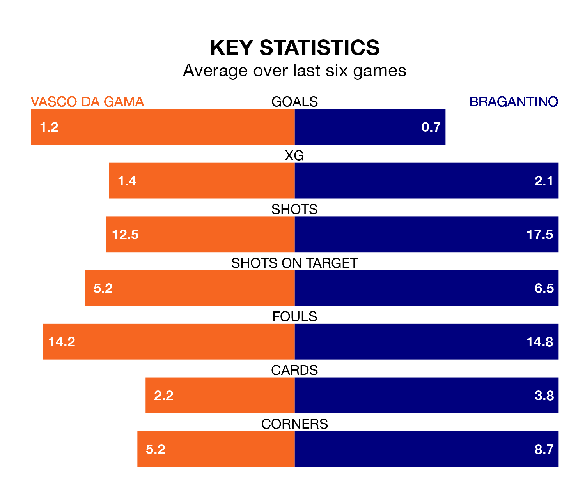

Bragantino come to the Estádio Club de Regatas Vasco da Gama to play Vasco da Gama on early Thursday in poor form, having collected just four points from their last six games.
The visitors have won one and drawn one of their last six fixtures, while Vasco da Gama have two wins and two draws.
With Cleiton Schwengber between the sticks, Bragantino can rely on one of the league's safest pair of hands. He has kept 16 clean sheets in his 32 appearances this season, and no 'keeper has prevented the opposition scoring more often in Serie A.
In Vasco da Gama's net, Léo Jardim has nine clean sheets in 36 games. He has conceded a goal every 74 minutes, 60% more often than the 120 minutes between goals for Schwengber.
With 39 goals in 37 games so far this season, the hosts are scoring at below the league average rate with 1.1 goals per game. And they are conceding more than average, letting in 50 goals at a rate of 1.4 per game.
The away team, meanwhile, are above average scorers, with 1.3 goals per game, compared to a league average of 1.2. They have conceded 0.9 goals per game.
Vasco da Gama are 16th in the table after 37 games, of which they have won 11 and drawn nine, earning 42 points.
Bragantino are 10 places ahead of Vasco da Gama in sixth, with 17 wins and 11 draws putting them on 62 points.
Vasco da Gama's last match was on Sunday, a 1-0 loss against Grêmio.
Bragantino beat Coritiba 1-0 last time out, also on Sunday, with Leonardo Rech Ortiz on the scoresheet.
